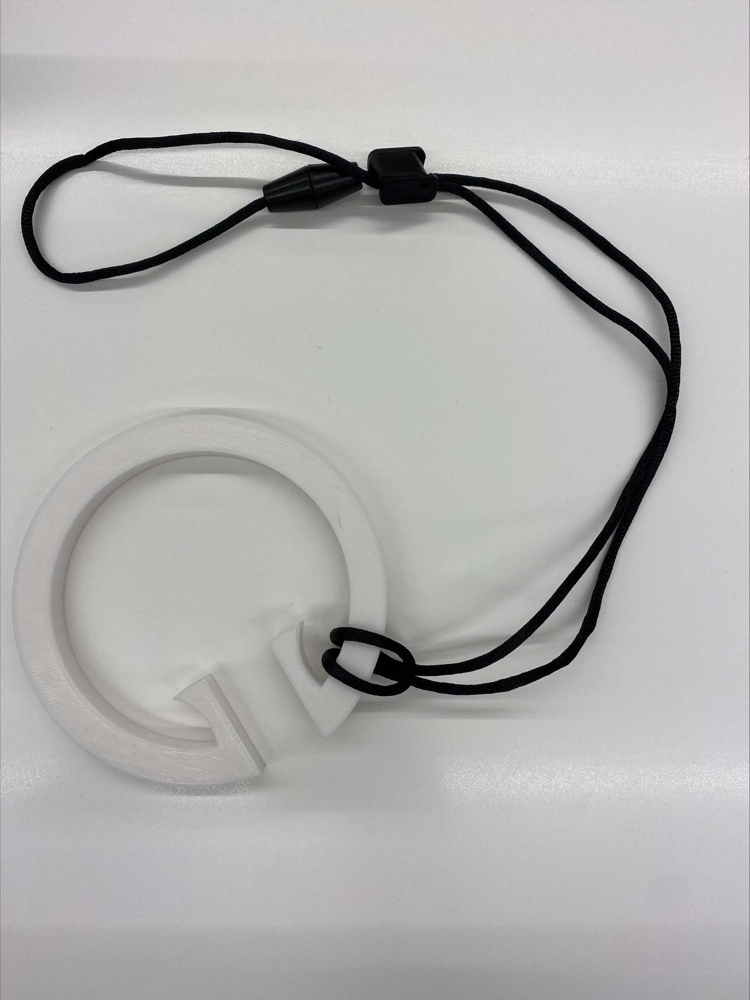
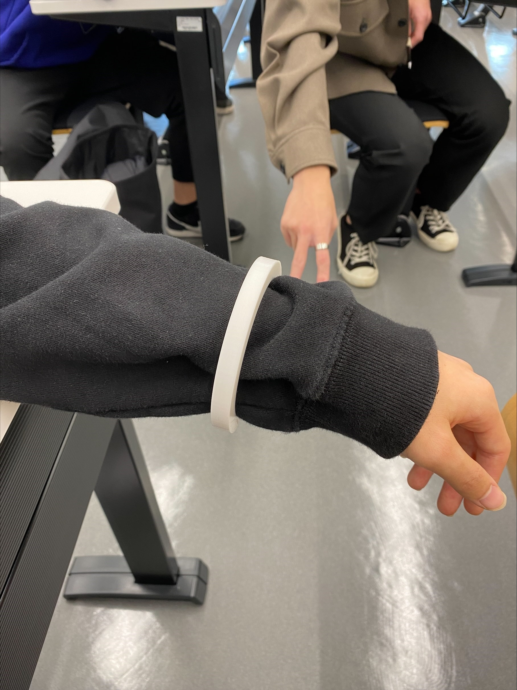

1.前回の課題
2.最終的に作った製品(プロトタイピング)


3.作品の説明
この製品は、電車で立ちながらでも両手を空けることができる製品です。
＜改善したポイント＞
前回の製品ではつり革にひっかけることはできるが、持ち運びが少し面倒だったというデメリットがあった。
そのため、今回の製品はリング型にしてブレスレットとして使えるようにした。そうすることで、持ち運ぶ時にバッグから「取りだす、しまう」という作業を省くことができるようになった。
＜メリット＞
この製品を使うことで、つり革をつかむ必要がないため、立ちながらでも両手で勉強ができる。
また他のメリットとして、コロナやインフルエンザなど感染症のリスクを減らすことができる。
4.使用機材
・３Dプリンター
・紐
5.メンバーの製品